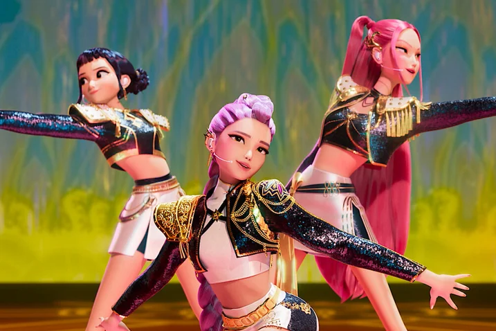

🔥 A Nova Era das Mulheres na Cultura Pop: Elas Não Estão Apenas no Palco — Elas São O Palco

Se tem uma coisa que 2026 deixou bem clara é que as mulheres dominaram a cultura pop. Não foi hype, não foi acaso — foi talento, visão e uma dose bem generosa de atitude.
Do cinema à música, dos games ao TikTok, elas estão redefinindo o que significa ser protagonista. E o mais legal? Cada uma faz isso à sua maneira, sem pedir licença e sem abrir mão da própria identidade.
💜 Na música, artistas como SZA, Dua Lipa e Anitta seguem rompendo fronteiras com hits que viram trilhas sonoras oficiais da vida real.
💜 No cinema, diretoras como Greta Gerwig transformam filmes em fenômenos culturais.
💜 Nos games e no streaming, criadoras de conteúdo mostram que o protagonismo feminino é múltiplo: dá pra ser gamer, fashion, nerd, cômica — e tudo ao mesmo tempo.
Elas não estão só “fazendo parte”. 😅 Elas estão escrevendo as regras do jogo.Confira o trailer:
Se você ama ver mulheres brilhando (e vamos combinar, como não amar?), fica comigo que vai ter matéria bonita, inspirada e cheia de energia feminina por aqui. 🌟
👉 Quer mais conteúdos assim? Me segue nas redes, comenta, compartilha e manda pras amigas que também amam cultura pop! 💬✨
@suajornalista — te espero por lá! 💖📱
Essas artistas mostram que força não precisa ser gritada.
Às vezes, ela dança.
Às vezes, ela canta.
Às vezes, ela apenas existe
— e basta.